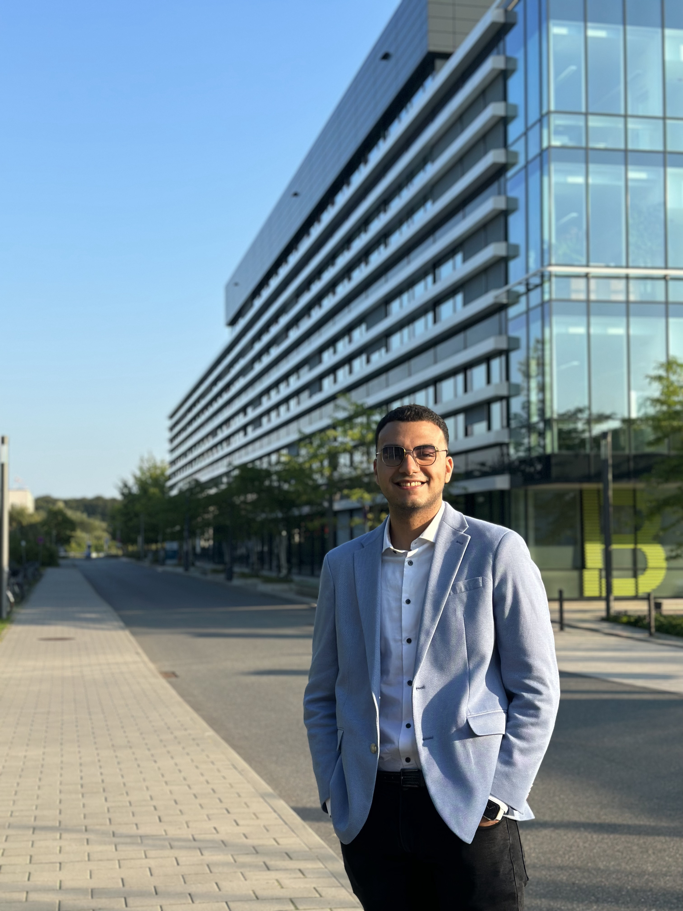

Abdalrahman Aboelmaaty
Summary:
I am a Computer Science engineer,a fresh graduate who loves to code.
Education:
German University in Cairo (GUC)
Bachelor Degree in Computer Science
Experience:
University of Lubeck
Reinforcement Learning and Robotics Intern | Python, TensorFlow
- Studied reinforcement learning techniques and programmed Thymio robots.
- Developed a decision-making support system for human-swarm interaction.
- Programmed and trained robots to navigate mazes using reinforcement learning and neural networks.
- Conducted extensive parameter tuning over 3 months to achieve optimal navigation performance.
- Transitioned from simulation-based training to real-world application of robot navigation.
Skills:
Languages:
Proficient in Java and Python, Competent in C# and JavaScript.Tools and Frameworks:
React.js, Angular, Express.js, TensorFlow, PyTorch, Node.js, Unity, SQL, Neural Networks,Web Design, MERN stack, React, SQL, Unity.Coursework:
Artificial Intelligence and Machine Learning, Databases, Cloud Computing, Computer and Network Security,
Project Management, Image Processing, Operating Systems, Computer System Architecture.
Projects:
- Resident Evil-like Game Development | Unity, C#
- Developed a fully functioning game from scratch | Java, GUI
- 3D and 2D Game Development | OpenGl, C++
- Online Learning System Development | MERN stack (MongoDB, Express JS, React JS, Node JS)
- Online Market Development | JavaScript, HTML, andMongoDB.
Other:
Contact Me